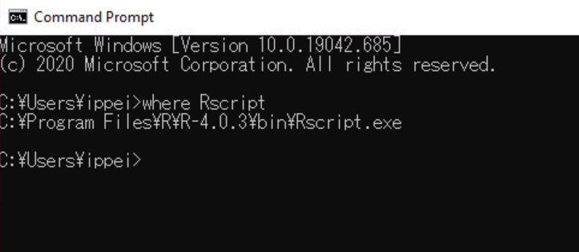

3 Installation
3.1 Configure R environment
Since, Douhau Data Studio build and run based on R Shiny framework, it is necessary to install and configure the R environment.
3.1.1 R installation
3.1.1.1 For windows users
R is obtain freely from CRAN web site.
https://cran.r-project.org/bin/windows/base/R-4.0.3-win.exe
And after to finish download, installer R-4.0.3-win.exe should be launch and to complete R installation.
Next, user path environment for R has to be configured through the following steps.
To check the path of installed R, “where R” command into Command Prompt is very useful.

Figure 3.1: fig caption
This command returns complete path string, example "C:\Program Files\R\R-4.0.3\bin\Rscript.exe", however, the last part of "\Rscript.exe" has to be removed to cofigured as path environment variable.
Control Panel -> System and Security -> System
install.packages(
c( "shiny",
"shinydashboard",
"dplyr",
"stringr",
"SASxport",
"R.utils",
"yaml",
"devtools"
)
)
library(devtools)
install_github("i-akiya/R4DSXML/R4DSXML")